¿Que sucedería si un enorme bloque de lava agrietada como pilares hexagonales, es erosionado?. Sencillamente, daría lugar a paisajes como una calzada de rocas hexagonales en Irlanda, una isla de pilares escalonados en Escocia, un cañón amurallado por pilotes naturales, una calzada en medio de un bosque en Estados Unidos, un acantilado que parece esculpido en la costa de Islandia.
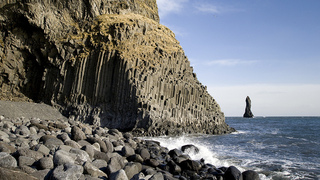
Ben Husmann
Son todos ejemplos de un fenómeno geológico conocido como formaciones de columnas basálticas. Por supuesto que hablamos de un proceso de miles de años: en zonas de gran actividad volcánica, en ocasiones, la lava, al secarse agrietada en forma de bloques hexagonales, es erosionada por la acción del mar, por un glaciar, por el agua de un río, y entonces, los bloques o pilares comienzan a desprenderse dando lugar a paisajes que no parecen tan naturales aunque en realidad sí lo son.
“Las columnas de basalto en su mayoría hexagonales, son rocas ígneas con un alto contenido en hierro que al brotar a superficie en forma de magma, pueden enfriarse y fracturarse con formas sorprendentes…Las columnas hexagonales de basalto, son el resultado de un enfriamiento brusco de una corriente de lava espesa, que genera profundas fracturas.”
En ésta entrada repasamos siete paisajes bien particulares, marcados por la presensia de pilares y columnas de basalto:
1. La costa negra de Vik (Islandia)
A dos horas de Reykjavik, nos toparemos en la zona de Vik con una costa que tiene poco de usual, aunque con la lógica de una isla de gran actividad volcánica. Las playas que miran al Atlántico tienen un aire a “fin del mundo”, una frontera entre rocas volcánicas, cenizas y columnas de basalto negro modeladas por el mar. Para completar la atmósfera “irreal”, la niebla y la humedad más elevada de Islandia acentúan ese aire misterioso:
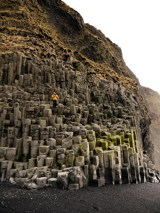
Bernard McManus
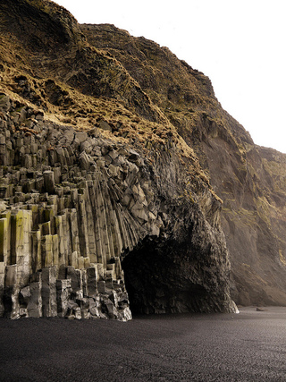
Bernard McManus
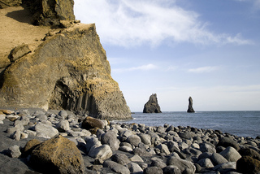
Ben Husman
2. Una Cascada entre columnas basálticas.
Dentro del Parque Nacional Skaftafell, una de las principales atracciones es la cascada Svartifoss, que cae enmarcada por cientos de columnas basálticas.
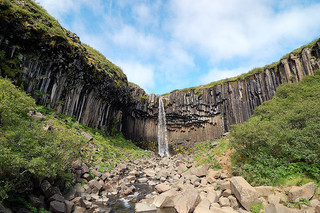
Rosino
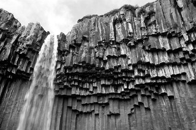
Rosino
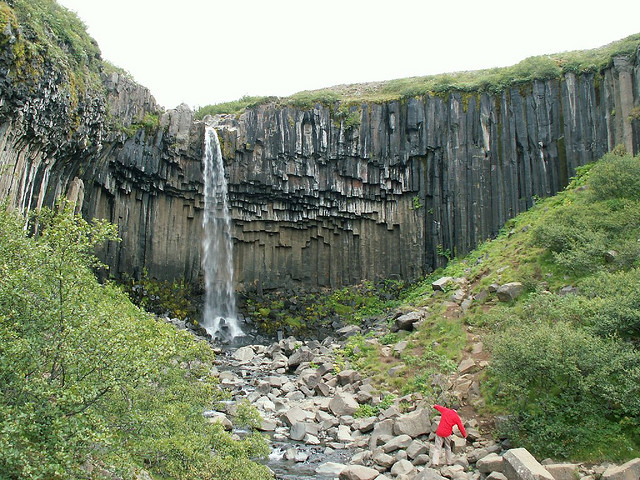
Ulrich Latzenhofer
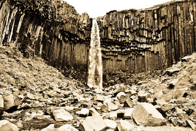
Shadowgate
Ver también 7 paisajes de Islandia que parecen de otro planeta
.
3. El cañón de Takachiho, en Japón
Aunque es una de nuestras entradas más recientes, no podíamos dejar de incluir ésta maravilla que está cerca de Takachiho, prefectura de Miyazaki. Se llama Garganta de Takachiho, un paraje natural que combina cuatro elementos de la naturaleza para completar un paraje idílico: un río de aguas cristalinas en turquesa, acantilados de prismas basálticos, una cascada que cae desde un acantilado y la exuberancia de la vegetación. El resultado, es un lugar increíble a sumar en nuestro blog:
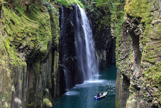
Tanaka
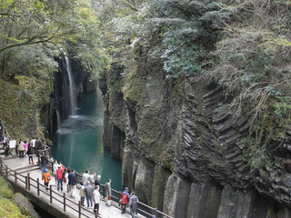
Kobakou
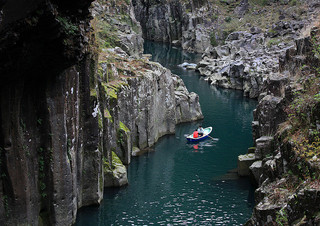
Tanaka
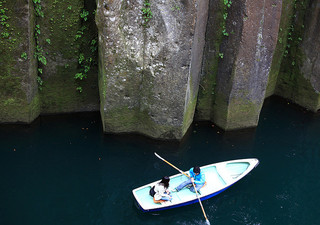
Tanaka
4. Los pilares de Los Órganos (La Gomera, España)
La erosión del mar, ha dejado al descubierto al noroeste de la isla de La Gomera, en Canarias, un paisaje que se conoce como Los Órganos, y creo, no hace falta explicar demasiado la razón:
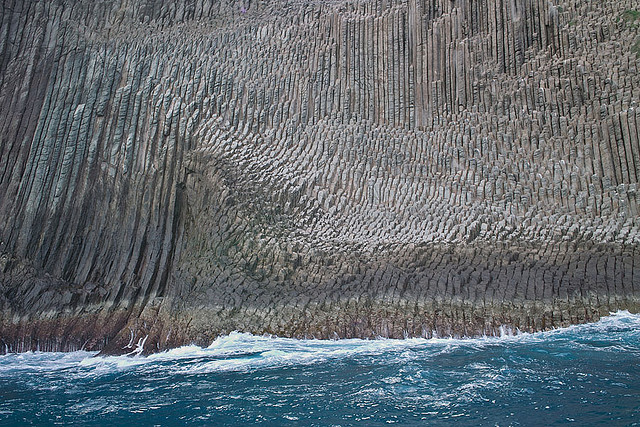
ingo.ronner
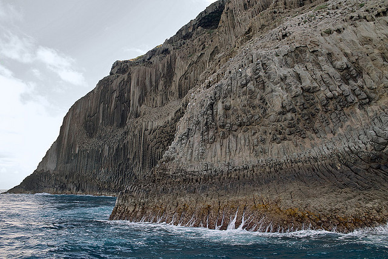
Ingo.ronner
Ver también 10 paisajes de España que parecen de fantasía
5. Una torre de Roca que emerge hacia el cielo.
En Estados Unidos también se encuentra la Torre del diablo, un cuello volcánico formado hace 65 millones de años popularizado en películas como Encuentro en la Tercera Fase. Este es otro lugar de una majestuosidad tan incomprensible, que los primeros indígenas de la zona echaron mano a otra explicación mágica para entender su surgimiento. Su altura es de 386 m. por encima del terreno circundante y su cumbre se encuentra a 1.558 m. por encima del nivel del mar. Esta increíble formación es visitada por muchos aventureros que cada año intentan ascender hasta su cima.

Imagen BackPackPhotography
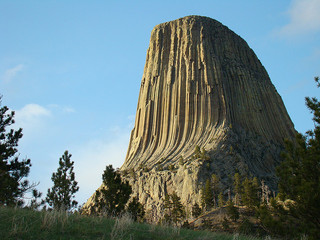
Imagen veritasnoctis

Imagen Geoffrey Plauche
6. Una Calzada de Gigantes (Irlanda)
En la costa noreste de Irlanda del Norte se encuentra un paisaje que es conocido como La Calzada del Gigante ( The Giant’s Causeway) un escenario natural formado de 40.000 columnas de basalto. El que ahora es Patrimonio de la Humanidad fue descubierto en 1693 y desde entonces no para de dejar atónitos a quienes lo visitan.
Pictrues
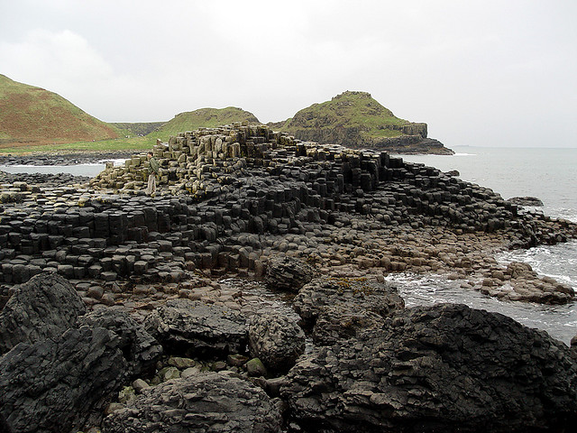
Imagen Damien du Toit
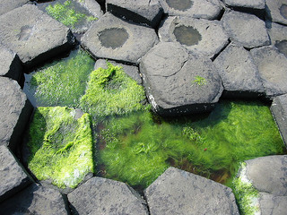
Imagen robertpaulyoung
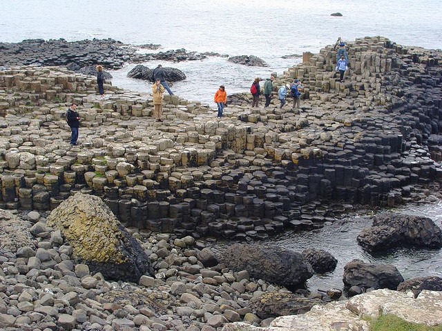
Imagen nicksarebi
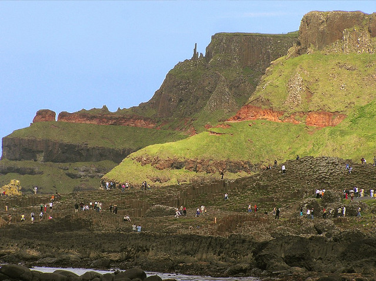
Alan Bruce
7. Una calzada en medio del bosque, en Estados Unidos.
Los pilares basálticos modelados, están situados en el Monumento Nacional Devils Postpile, en California, Estados Unidos.
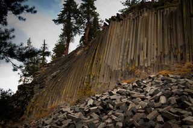
Pychap
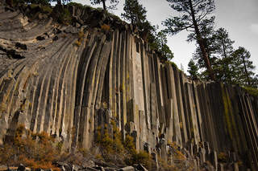
pychap
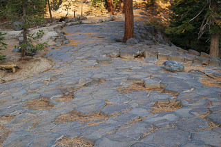
sami_sf
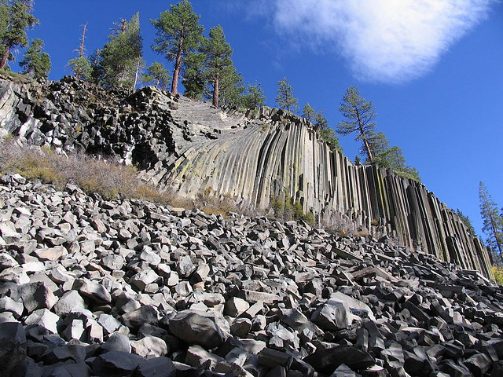
eileen
8. La gruta de los ecos en la isla de los pilares.
La Gruta de Fingal en la isla de los pilares (isla Staffa) , además de ser un curioso paisajes en Escocia, es un lugar de una particular acústica. Se trata de una cueva marina que se formó con el mismo flujo de lava que el de la Calzada de los Gigantes. Pero en ésta ocasión, el mar agrega un efecto especial.
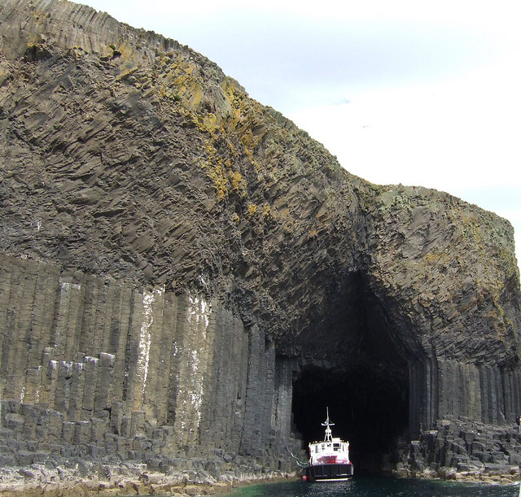
Imagen wjmarnoch
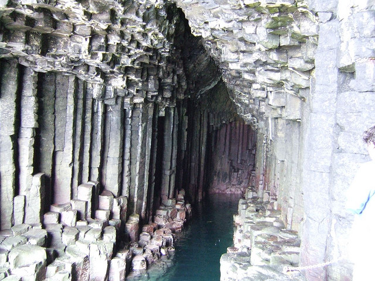
Imagen wjmarnoch
La imponencia de los arcos naturales de la Gruta de Fingal, por los que entra el mar y los escalofriantes sonidos producidos por los ecos de las olas hacen de esta obra un lugar mágico que hay que presenciar. Además, toda la isla es llamativa por sus particulares formas rocosas:
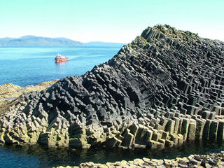
Imagen dizzley
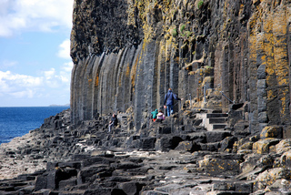
Imagen donnacgreen
Extras: las columas de basalto, en realidad no son difíciles de encontrar en cualquier paisaje rocoso de origen volcánico que se precie. A continuación, completamos el post con otras imágenes curiosas de éste tipo de paisajes:
En Yellowston, Estados Unidos, podremos observar una especie de fortaleza natural, en realidad, los pilares de basalto al desnudo simulando pequeñas murallas en la ladera de una montaña.
También en Estados Unidos, una formación de basalto al costado de una carretera:
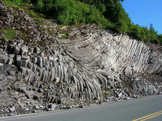
Brewbooks
Si te ha gustado, menéalo
Puedes seguirnos en Twitter / y ahora ¡también en Pinterest!